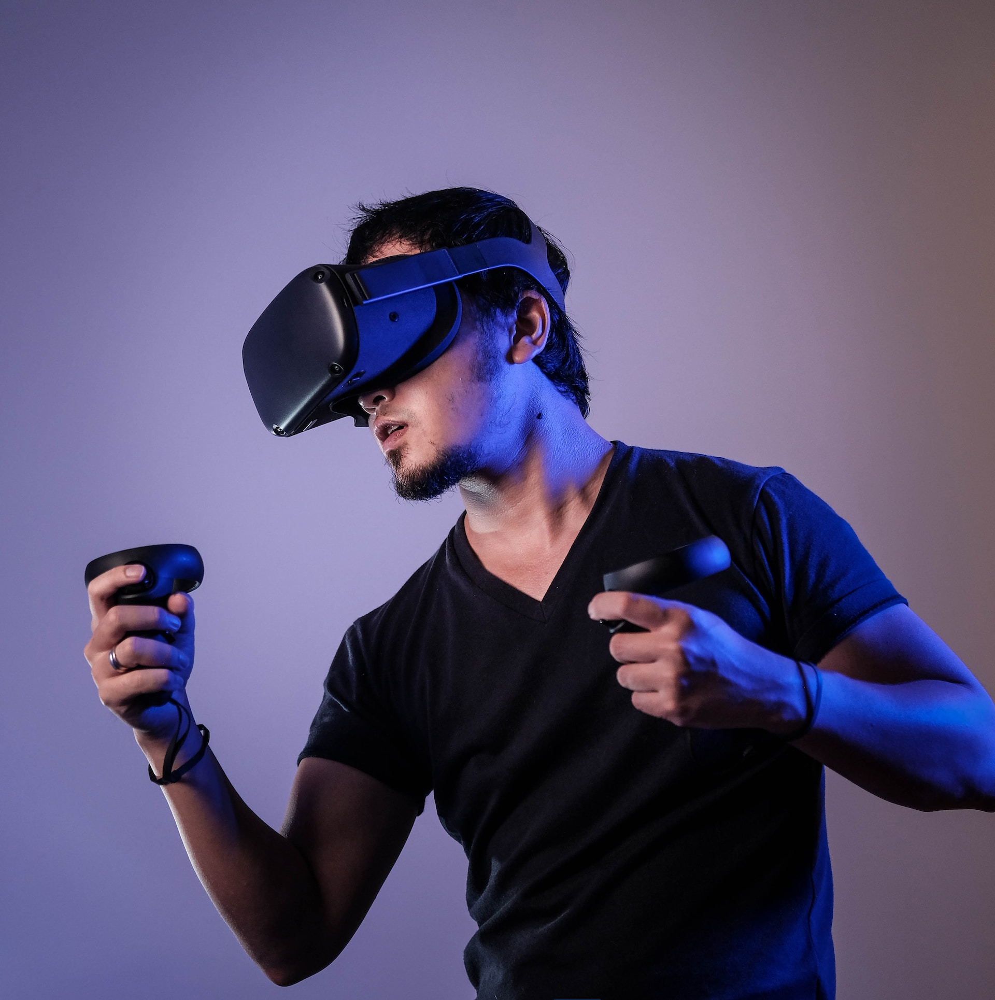

ORESTIS GEORGIOU
RESEARCHER.
INVENTOR
AUTHOR.

An experienced researcher,inventor and author,with a track record at leading R & D teams,writing,winning grant proposals,whilst being passionate about deep-tech innovation that leads to impact.
BIOGRAPHY
Dr Orestis Georgiou is an author of 6 patents, 1 book, and 100+ academic papers that have been published in leading journals and conferences of Mathematics, Physics, Computer Science, Engineering and Medicine. He has also been co-awarded R&D grants in excess of €10 million, including a Marie Curie Individual Fellowship, and is the recipient of the prestigious 2019 IEEE Heinrich Hertz award. Finally, as Head of R&D Partnerships at Ultraleap, he is passionate about haptic technologies, networks, and spatial XR computing and oversees all our external R&D collaboration activities and grant-funded projects.
MY FIRST THEOREM
Pick a number at random between a and b. Repeat this n times. Plot a histogram (density) of the resulting numbers and you will find that it follows this distribution which I proved using Fourier analysis together with my PhD supervisor Prof Carl Dettmann.
MY FIRST BOOK
This is a book about mid-air haptics, generated by ultrasound phased arrays, and the novel human-computer interaction (HCI) paradigms it enables. It’s co-edited with William Frier, Euan Freeman, Claudio Pacchierotti, and Takayuki Hoshi, and co-authored with 30+ experts in the field.
Talking with an AI
I believe that Artificial Intelligence (AI) will be the most significant invention in the history of humanity. In this blog, I had the opportunity to talk to one.
PUBLICATIONS
Publishing has allowed me to network with other scholars and to further refine my own ideas and research. It’s something I enjoy immensely and hope that these papers will help others further their science and welcome any opportunities to collaborate.
Speaking

I’ve communicated my science to over 40 academic conferences, organised several international workshops, and delivered multiple invited tutorial presentations including a keynote to 500 engineering students.
Trajectory
My exposure to both academic and industrial settings (large and small) over the past 10 years has taught me to think strategically, pragmatically, and scientifically, positioning me as someone able to imagine, connect and direct research efforts towards tangible objectives and strategic targets.
Get in touch